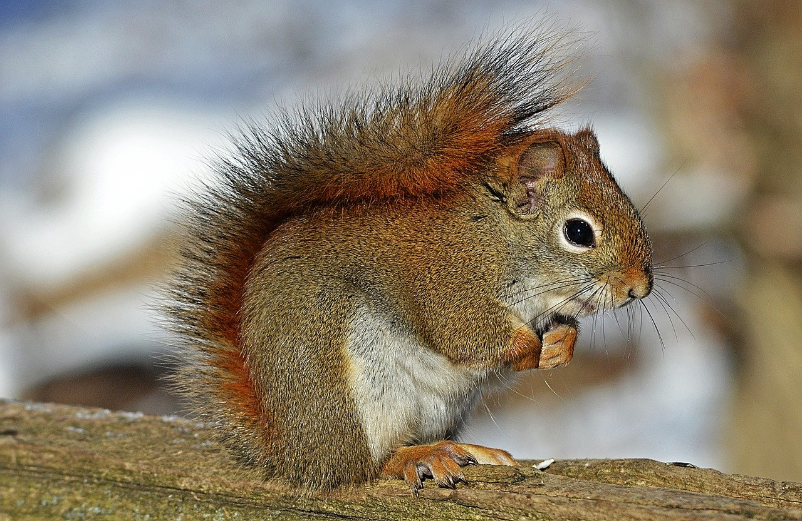

1.分類
学名︰Sciurus vulgaris
ネズミ目（齧歯目）リス科に属する動物の総称である。
リス科には、5亜科58属285種が含まれる。樹上で暮らすリスのほか、地上で暮らすマーモット、プレーリードッグ、シマリス、イワリス、ジリス、滑空能力のあるモモンガ、ムササビもリスの仲間である。
※マーモット※プレーリードッグ
※モモンガ
2.身体的特徴
樹上性リスは、毛のふさふさした大きな尾を持つ。地上性のリス（ジリス）は、樹上性リスに比べて尾は毛量が少なく、短いものが多い。多くのリスは、体毛がやわらかく絹のように滑らかだが、中には厚い毛皮を持つものもある。
前脚は後脚よりも短く、足指は4または5本。しばしば前足の親指はあまり発達しておらず、足の裏にはやわらかい肉球がある。手先は器用で、腰をおろして座り、前足で食物を保持しながら食べることができる。
大きな目をもち、視覚は優れている。多くは顔のひげや脚の触毛で、狭い場所を通る際に幅を認識するなど、優れた体性感覚を持つ。 シマリス属やジリスには、頬の内側に「頬袋」と呼ばれる袋状の構造がある。頬袋には柔軟性があり、たくさんの食物を頬張って運ぶことができる。
3.生態的特徴
樹上性リスとジリスが昼行性または薄明薄暮性であるのに対して、モモンガなどの滑空するリスは夜行性である。ただし、哺乳期の母モモンガとその子供は、夏の間は昼行性になる。 樹上性リスは、おもに樹上で生活する。木登りやジャンプを得意とし、枝の上や樹洞に巣を作る。基本的に単独生活を営み、明確な縄張りを持つ種は少ない。また、寒冷地に生息する種でも冬眠はしない。
ジリスは、草原や砂地などに巣穴を掘り、地上で生活している。森林限界を越えた高山に住む種もいる。縄張りを持つものが多い。社会性があり、家族を中心とした集団を形成し、よく発達したコロニーで生活するものが多い。多くのジリスは冬眠をする。
4.食性／繁殖
食性
おもに草食性で、木の実、種子、果実、キノコ、草などの多様多種な植物を食べる。昆虫、鳥類の卵やヒナ、爬虫類、小型の齧歯類を食べる種もある。いくつかの熱帯の種は、ほとんど完全に昆虫食に移行している。
繁殖
年に1回または2回出産する。妊娠期間は3～6週間で、種によって異なる。子供は毛も歯も生えておらず、目も見えない状態で生まれる。ほとんどの種でメスのみが子供の世話をする。生後6～10週で離乳し、生後1年で性成熟する。
5.生息分布
全世界に分布。ただし、オーストラリア、南極大陸、ポリネシア、マダガスカル、南アメリカ南部、一部の砂漠（サハラ、エジプト、アラビア）を除く。 オーストラリア大陸には元々生息していなかったが、19世紀に人為的に移入された。
6.起源／歴史
中世ヨーロッパでは、リスの毛皮が衣服の裏地に用いられた。中でもシベリア産のキタリスの毛皮が珍重され、腹部の白い毛を用いるヴェア（vair、ヴェールとも）は最高級品で、14世紀をピークに広くみられた。たとえば1枚のマントあたり数百頭といった規模で毛皮を使用するため、富や権力の象徴であり、身分に応じて毛皮の質や白と灰色の密度などが決められていた。
日本では昭和40年ごろからシマリスに人気が出始めた。ニホンリスやキタリスなどの日本に生息しているリスは鳥獣保護法により捕獲が禁止されているため、外国から輸入されたリスが販売されている。